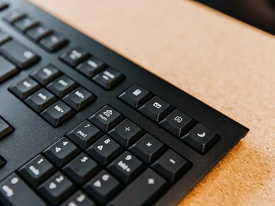
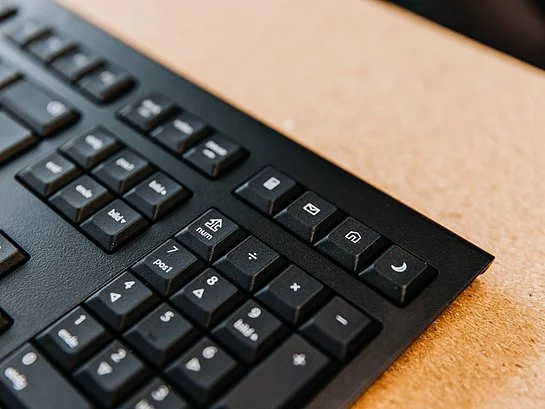

Klávesnice je nejběžnější vstupní zařízení počítače, které umožňuje psaní textu a ovládání systému. Každá klávesa má přiřazenou určitou funkci nebo znak. Existují různé typy klávesnic, jako jsou mechanické, membránové nebo bezdrátové varianty. Rozložení kláves se může lišit podle jazykové mutace a účelu použití. Některé modely nabízejí i podsvícení nebo programovatelná tlačítka pro hráče.
Moderní klávesnice se liší nejen vzhledem, ale i kvalitou a odezvou při psaní. Mechanické klávesnice mají výrazný zvuk a přesný stisk, zatímco membránové jsou tišší a levnější. Ergonomické modely pomáhají snižovat únavu rukou při delší práci. Výrobci často přidávají multimediální klávesy pro ovládání hudby nebo hlasitosti. Výběr správné klávesnice závisí na tom, jakým způsobem počítač používáte.
- Mechanická klávesnice – výborný pocit při psaní
- Membránová klávesnice – tišší a levnější
- Bezdrátová klávesnice – pohodlné ovládání bez kabelů